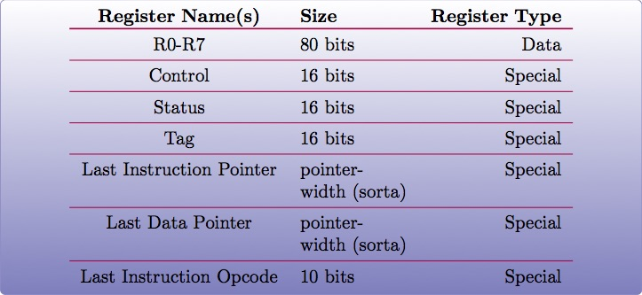
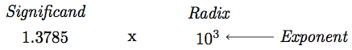
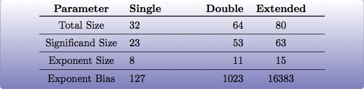

Floating Point and SIMD
Objectives
- Understand at a basic level how floating point numbers are represented
- Perform basic floating point operations
- Understand and utilize the Single Instruction Multiple Data hardware to perform basic operations
x87 - The Floating Point Architecture
Data Registers
- Can contain any 32 or 64 bit data
- Can't transfer directly from standard registers (e.g., EAX/RAX)
GDB
Display floating point registers:
(gdb) tui reg float
Floating Point Exceptions
- Floating point exceptions are separate from typical interrupts
- They are the only interrupts you can disable from an unprivileged operating context
- The previous instruction pointer (and other contextual information) are stored via special registers
- Floating point hardware also includes its own FLAGS register
- As mentioned in the previous slide, contextual information is stored in special registers under certain circumstances
Floating Point Encoding
- Data encoding is a great deal more complicated for floating point than other types
- Floating point numbers are represented via scientific notation (sort of)
- We can store floats in one of three ways:
- Single Precision -> which is 32 bits
- Double Precision -> which is 64 bits
- Quad Precision -> which is 128 bits
Floating Point Encoding (cont'd)
Four parts to the equation:
- Significand (also called the mantissa) - This is the decimal representation of our number. A non-zero value will always be in the left-most position
- Radix - The base to multiply by (e.g., 10)
- Exponent - The power to raise the radix to
Floating Point Data Encoding
- x87 Registers Show the split between different parts (under the hood)
So if we have a number like 1378.5, and our hardware looks like this:
We have:

Binary Representation
- We take the base 2 representation of the number
- We transform the number, such that it can be represented via scientific notation
- The exponent is encoded using a "biased" value, which expedites compare operations
- Since we know that the left-most position of the significand will always be 1, it is dropped for single precision numbers (though it is preserved in doubles).
Exponent Values
Bias value added to exponent

e.g., an exponent of 3 (111 in binary) would get added with 127 (in the case of a single precision float), or 1111111, to get 10000110.
Special Exponent Values
- Some values are preserved for special cases in exponent representation
- 00000000 (all 0s) - This value is used to encode +/- infinity
- 11111111 (all 1s) - This value is used to indicate NaN (Not a Number)
- NaN simply indicates that the floating point encoded value is not valid.
Working with Floating Point
- The floating point registers are treated like a stack
- Values get pushed on (via "load" instructions) and popped off/copied (via "store" instructions)
FPU Instruction Set
Basic Operations
- Loads (push)
- fld - Loads a floating point value from the indicated location, onto the stack
- flid - Loads an integer value, encoding it as a double, onto the stack
- Stores
- fst - Stores the value on the top of the stack at the specified location (either memory or elsewhere in the floating point stack)
- fstp - Performs the same operation as above, but also pops the value off the stack.
- fist - Converts the value at the top of the stack to an integer, and stores it at the destination.
- Exchange: fxch - Swaps the contents of the given floating point registers
FPU Conditional Move
fcmovcc - Move if: Copies the contents from the requested register in the stack to the top if the condition is satisfied
- b (e.g., fcmovb) - Move if below (if CF is set to 1)
- nb - Move if not below (e.g., CF is 0)
- e - Move if equal (e.g., ZF is 1)
- ne - Move if not equal (ZF is 0)
- be - Move if below or equal (CF is 1 or ZF is 1)
- nbe - Move if not below or equal (CF is 0 and ZF is 0)
FPU Arithmetic Operations
- fadd/fsub/fmul - Performs the requested operation on the source and destination operands, storing the results in the destination
- fiadd/fisub/fimul - Similar to above, but performs the requested operation on a floating point and integer value
Lab 11
Floating Point Operations
- Copy the Lab11 folder (and its contents)
- Modify the *.nasm file (Each function should have a comment block - lines starting with ';' containing instructions)
- Build and run using the following commands:
~/Desktop/Lab11 $ cmake . && cmake --build .
~/Desktop/Lab11 $ ./lab11
Single Instruction, Multiple Data (SIMD)
What is SIMD?
- Set of specialized hardware and instructions
- SSE (Streaming SIMD Extensions) is part of this (among others)
- Provide a mechanism for operating on "vectors" of data at a time
- Provides a set of 128-bit registers
- Each can be packed with 4 32-bit "scalar" values
SIMD Hardware
- x86: 8 SSE registers available, from XMM0 - XMM7
- x64: provides 16 SSE registers, from XMM0 - XMM15
SIMD Data Movement - Aligned vs Unaligned
- Some SIMD instructions differentiate between aligned and unaligned data
- In order to use "aligned" instructions, must guarantee 16 byte alignment
- 16 byte is important in this case, because SIMD registers are 16 bytes (128 bits) wide
SIMD Operations - Moving Data
- Operations typically operate on vector or scalar values
- Scalar - 32 bits (single element)
- Vector - All elements of the SIMD register (128 bits)
- Moving data in/out:
- movups - Move 128 bits of data between memory and/or SIMD register(s), unaligned
- movaps - Move 128 bits of data between memory and/or SIMD register(s), aligned
- movhps - Move 64 bits into the high part of a SIMD register
- movlps - Move 64 bits into the low part of a SIMD register
- movss - Move a 32 bit value between memory and/or SIMD register(s)
SIMD: Moving Around
movups xmm0, [rdi] ; moving 128 bits of data into xmm0
movss xmm1, [rsi] ; moving 32 bits of data into xmm1
mov [rdx], eax
movss xmm2, [rdx]
SIMD Arithmetic
The table below lists arithmetic instructions, both the scalar and vector variations:
Vector | Scalar | Description |
addps | addss | Adds operands |
subps | subss | Subtracts operands |
mulps | mulss | Multiplies operands |
divps | divss | Divides operands |
SIMD Arithmetic
Example use:
movups xmm0, [rdi] ; load first vector
movups xmm1, [rsi] ; load second vector
addps xmm0, xmm1 ; add the two
movups [rdx], xmm0 ; store the result
SIMD Comparisons
Comparison Operations
- cmp* operation is a bit strange at first
- Compares a combination of registers/memory
- Stores the result in the first operand
- Third param indicates the type of compare to do (next slide)
- Result stored as 0 if the condition is false, -1 (all 1's) if true
- Min and max preserve the values that are greater (or smaller) between operands
SIMD Comparisons
Cmp's third parameter:
Number | Operation | C Equiv |
0 | Equal | == |
1 | Less Than | < |
2 | Less or equal | <= |
3 | Unordered | n/a |
4 | Not Equal | != |
5 | Not Less than | !(x < y) |
6 | Not less or equal | !(x <= y) |
7 | Ordered | n/a |
SIMD Comparisons
Operations
Vector | Scalar | Description |
maxps | maxss | Obtains maximum of operands |
minps | minss | Obtains minimum of operands |
cmpps | cmpss | Compares operands, all 1's or
0's returned. |
SIMD Comparisons
Example:
movups xmm0, [rax]
movups xmm1, [rcx]
cmpps xmm0, xmm1, 4 ; find the values that are not equal
SIMD Bitwise Operations
Vector | Description |
andps | Bitwise and of operands |
orps | Bitwise or of operands |
xorps | Bitwise xor of operands |
Shuffling Data
- Allows us to rearrange the scalar values within the vector
- Takes three arguments:
- Source Register
- Destination Register
- A single immediate byte value (imm8) to control how the shuffle takes place
- Will often be used with the same register as source/destination (to reorder)
shufps xmm0, xmm0, 0x10
Shuffling Data (cont'd)
- The single byte immediate is broken into 4, 2-bit blocks representing scalar0 - 3
- Each set of bits controls what block from the "source" register gets stored in the "destination"
Control Bits
- Bits 1-2: Indicate which "source" block will replace the value in block (or scalar) 0 of the destination register (e.g., 01 would cause the contents of block 1 to be stored in block 0)
- Bits 2-3: Indicate which "source" block will be written to block 1 of the "destination"
- Bits 4-5: Indicate which "source" block will replace the contents of block 2 in the "destination"
- Bits 6-7: Indicate which "source" block will replace the contents of block 3 in the "destination"
GDB
Display SIMD registers:
(gdb) tui reg vector
Lab 12
SIMD
- Copy the Lab12 folder (and its contents)
- Modify the *.nasm file (Each function should have a comment block - lines starting with ';' containing instructions)
- Build and run using the following commands:
~/Desktop/Lab12 $ cmake . && cmake --build .
~/Desktop/Lab12 $ ./lab12
Section Review
- Floating Point Architecture
- Interrupts
- Register Stack
- Flags
- SIMD
- Registers
- Vectors vs Scalars